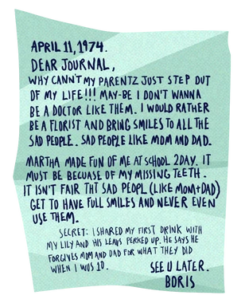
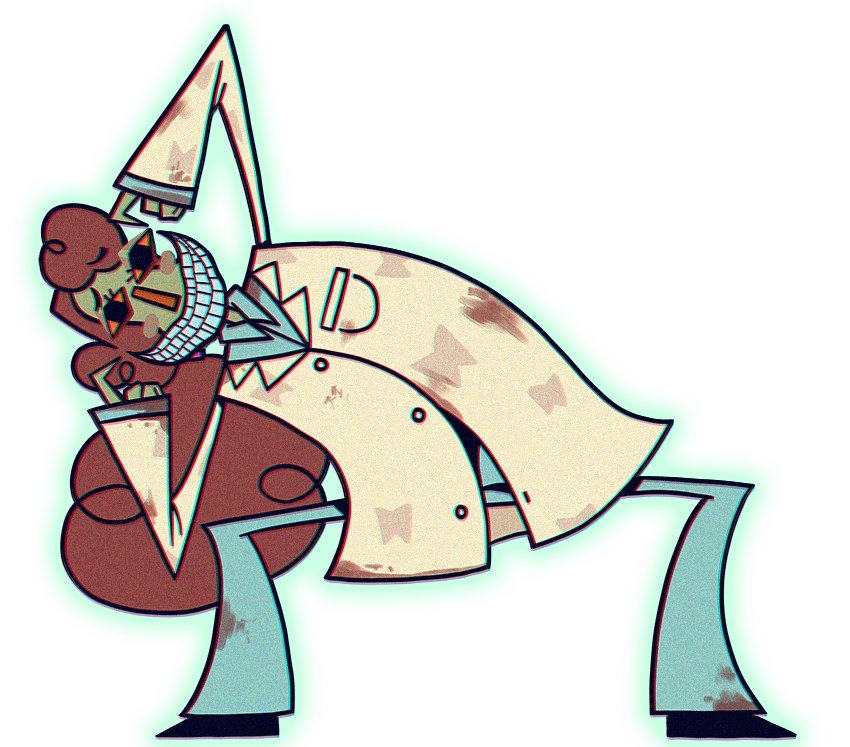
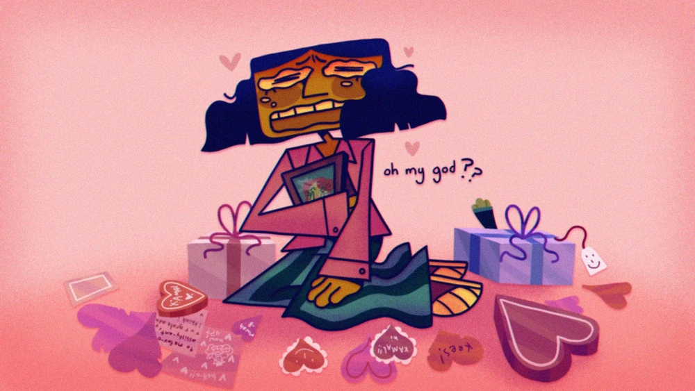

Backstory
Throughout Smile For Me, the player is given the chance to collect diary sheets through various means, some being easily obtained through playing through the game, and some being more hidden and out of sight. These diary sheets allow the player insight into Dr Habit's past, and also allow the player the ability to achieve the good ending of the game by teaching them how to grow the Erythronium flower. An example of one of the diary sheets can be shown below:

Martha made fun of me at school 2day. It must be because of my missing teeth. It isn't fair tht sad peopl (Like mom+dad) get to have full smiles and never even use them.
Secret: I shared my first drink with my lily and his leaves perked up. He says he forgives mom and dad for what they did when I was 10.
See u later, Boris."
Through these diary pages, as seen above, we learn that Dr Habit has a history of abuse and bullying. Through other unshown diary pages it's made clear Dr. Habit was hit at home, one episode being documented in a diary page for him kissing his Erythronium flower. As you progress through the pages, it shows Dr Habits spiral into creating the Habitat. All he wants is to see people smile and be happy, but his envy and hatred grows due to how people treat him, the worst bully being named as "Martha". He doesn't have a full smile (indictated to be due to his father hitting him, causing them to get knocked out), and he grows envious of those with smiles, claiming that they're gifted with full smiles yet do not use them properly. As he grows, he becomes obsessed with the idea of a full smile, aswell as more and more envious and hateful of sad people and their "big frownies", leading him to his grand idea for "The Big Event". Not once is it shown that he has true malicious intent with the various pages you find. All he wishes to do is bring smiles to people, and "fix how the world smiles". Despite lack of malicious intent, however, his idea of "fixing" the way the world smiles is harmful (and will be elaborated on more fully in the next section). The Diary pages end with him writing about his idea for the Habitat, calling it his "Magnus Opus".
Relation to The Habitat
Dr. Habit is the Habitats very creator! According to him the Habitst was created to "scare the big frownies away", and bring joy to the sad people who come to it. This is, however, not the case. As stated in the previous section, Dr Habit is obsessed with smiles and teeth. This ties into his reasoning behind creating the Habitat. Smiles are contagious, and in Dr. Habits monologue during the ending, he states: "And maybe, just maybe. . . if you had a smile bbig enoughhh...you could cheer up the Whole World." As he says this, he finally shows off his smile; the result of his obsession.

He's taken teeth from many different people and inserted them into his own smile for one goal: to make the whole world smile. This was the whole point of the Habitat. The whole reason for its existence; for him to be able to take teeth from those "undeserving" of their smiles and make their teeth be able to be shown off through his. This is the whole reason behind The Habitat.
Funnnnn Facts!
- • Dr Habit's birthday is January 1st, 1957!!! (This makes him a capricorn!)
- • Dr. Habit is heavily implied to be transgender, his creators Yugo and Lane even supporting the idea/hinting at it in Q&A's!!!
- • Dr. Habit canonically has a russian accent (wow!!)!!!
- • He totally in no way shape or form has a HUGGEEEE crush on Kamal what no way

- • ....ignore that image. I don't know how that got there.
Resourcez and stuff!!
Most information on this page comes from Thisss website!!!
Byeee!!!!